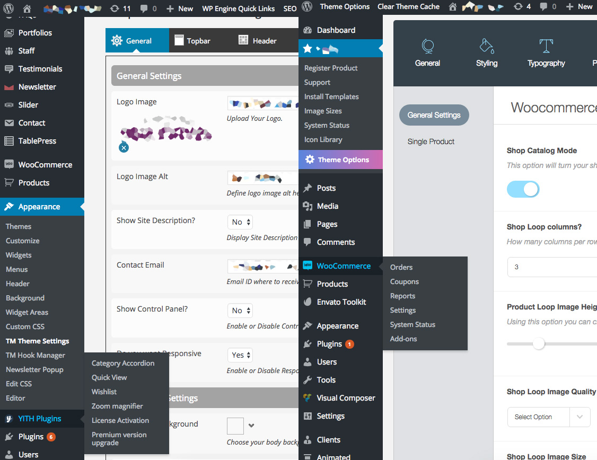

The backend is the part of a web application that works behind the scenes to manage data, handle logic, and ensure everything runs smoothly. It communicates with the database, processes user requests, and sends the appropriate responses back to the frontend. Backend development typically involves server-side languages like Node.js, Python, Java, or PHP, along with databases such as MySQL, MongoDB, or PostgreSQL. Its main purpose is to create a secure, reliable, and efficient system that supports the functionality of the entire application.
